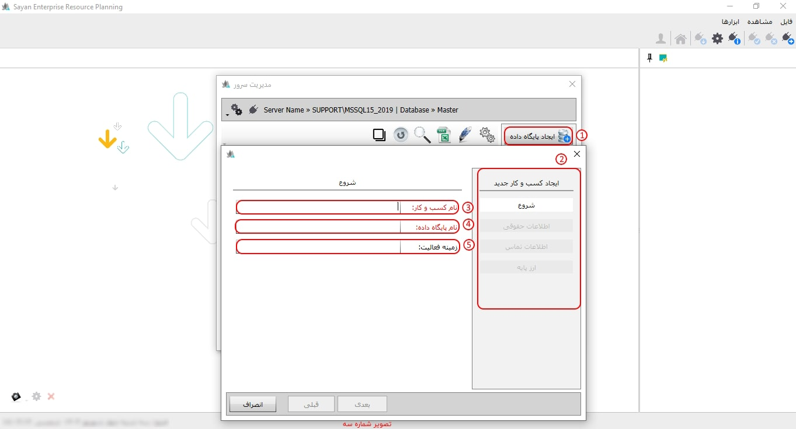
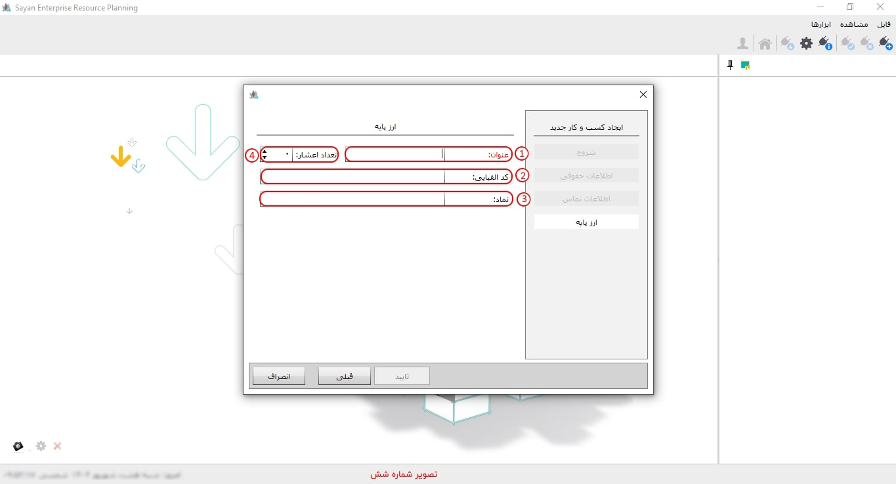
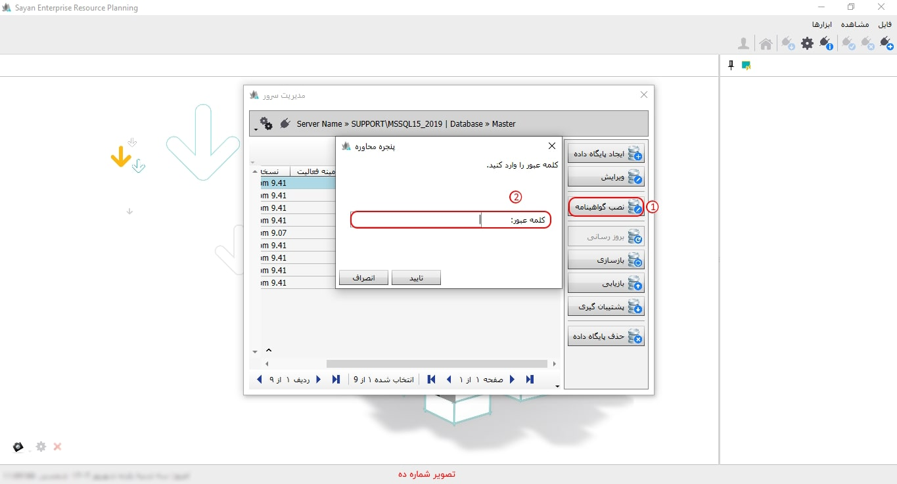
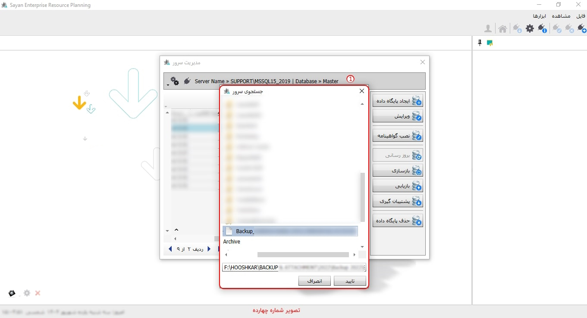

امکان مدیریت سرور از طرق مختلفی در دسترس می باشد هنگامی که نرم افزار سایان را اجرا می کنید مطابق تصویر زیر صفحه ای با دو تب مشاهده می کنید که تب دوم آن تنظیمات و ارتباط با سرور است :

برای ادامه مطلب به تصویر شماره دو مراجعه نمایید.
-کلمه عبور(کادر شماره یک): پس از وارد نمودن کلمه عبور، صفحه مدیریت سرور مطابق با تصویر زیر نمایش داده میشود. شایان ذکر است که کلمه عبور بهصورت پیشفرض "1111" بوده و پس از ورود به صفحه، امکان تغییر آن فراهم میباشد.
برای ادامه مطلب به تصویر شماره سه مراجعه نمایید.

-ایجاد پایگاه داده(کادر شماره یک): جهت ایجاد پایگاه داده جدید، کافیست این گزینه را انتخاب کنید.
-کادر شماره دو: این بخش به شما امکان میدهد تا تمامی پایگاههای دادهای را که ایجاد کردهاید، مشاهده نمایید.
برای ادامه مطلب به تصویر شماره چهار مراجعه نمایید.

-نام و کسب کار(کادر شماره یک): در این قسمت میتوانید نام کسبوکار خود را به زبان فارسی وارد نمایید.
-نام پایگاه داده(کادر شماره دو): لطفاً نام پایگاه داده را به زبان لاتین (انگلیسی) وارد نمایید.
-نکته:
برای ادامه مطلب به تصویر شماره پنج مراجعه نمایید.

-عنوان(کادر شماره یک): در این قسمت، عنوان موردنظر را وارد کنید؛ مقدار پیشفرض آن «ریال» است.
برای ادامه مطلب به تصویر شماره شش مراجعه نمایید.

-ویرایش (کادر شماره یک): با انتخاب پایگاه داده مورد نظر از فهرست پایگاههای داده و کلیک بر روی این گزینه، میتوانید نام شرکت مرتبط با پایگاه داده انتخابی و جزئیات اطلاعات آن را ویرایش نمایید. شایان ذکر است که نام پایگاه داده قابل ویرایش نمیباشد.
برای ادامه مطلب به تصویر شماره هفت مراجعه نمایید.

-کادر شماره یک: در این بخش میتوانید اطلاعات مربوطه را ویرایش کرده و تغییرات موردنظر خود را اعمال نمایید.
برای ادامه مطلب به تصویر شماره هشت مراجعه نمایید.

-نصب گواهینامه(کادر شماره یک): پشتیبان نرمافزار با استفاده از این گزینه، اقدام به نصب گواهینامه برای کاربر مینماید.
برای ادامه مطلب به تصویر شماره نه مراجعه نمایید.

-بروز رسانی(کادر شماره یک): با استفاده از این گزینه، قادر خواهید بود پایگاه داده انتخابی خود را بهروزرسانی نمایید. این عملیات معمولاً زمانی انجام میشود که نسخه جدیدتری از نرمافزار را نصب کرده باشید. پیش از انجام این کار، ضروری است از اطلاعات پایگاه داده خود نسخه پشتیبان تهیه کنید، زیرا در هنگام بهروزرسانی، دادهها تغییر یافته و بازگشت به نسخه قبلی امکانپذیر نخواهد بود.
برای ادامه مطلب به تصویر شماره ده مراجعه نمایید.

-بازسازی(کادر شماره یک): با انتخاب این گزینه، سرعت انجام محاسبات در نرمافزار افزایش مییابد.
نکته: پیش از انجام فرآیند بازسازی، لازم است بهمنظور اطمینان و حفظ اطلاعات، از پایگاه داده مورد نظر نسخه پشتیبان (Backup) تهیه نمایید.
برای ادامه مطلب به تصویر شماره یازده مراجعه نمایید.

-بازیابی(کادر شماره یک): برای بازیابی فایل پشتیبان روی پایگاه داده، میتوانید از این گزینه استفاده نمایید. با انجام عملیات بازیابی، اطلاعات فعلی پایگاه داده حذف شده و دادههای موجود در فایل پشتیبان جایگزین خواهند شد. لازم به یادآوری است که این عملیات برگشتناپذیر میباشد.
برای ادامه مطلب به تصویر شماره دوزاره مراجعه نماید.

-پشتیبان گیری (کادر شماره یک): برای تهیه پشتیبان از پایگاه داده، ابتدا آن را انتخاب کرده و سپس روی این گزینه کلیک نمایید تا در صورت بروز هرگونه مشکل، امکان بازیابی اطلاعات شما فراهم باشد.
برای ادامه مطلب به تصویر شماره سیزده مراجعه نماید.
-حذف پایگاه داده (کادر شماره یک): با انتخاب این گزینه، تمامی اطلاعات پایگاه داده شما حذف شده و بازیابی آن امکانپذیر نخواهد بود.
برای ادامه مطلب به تصوریر شماره چهارده مراجعه نمایید.

-کادر شماره یک: برای دسترسی به منوی تنظیمات، بر روی آیکون چرخدنده واقع در گوشه بالای سمت چپ کلیک نمایید تا زیرمنوهای مربوطه نمایش داده شوند.
-تنظیم کردن سرور(کادر شماره دو): برای شروع به کار نرمافزار پس از نصب، ابتدا روی این گزینه کلیک کنید تا تنظیمات سرور انجام شود.

-نصب قفل (کادر شماره دو): بعد از نصب نرمافزار، باید قفل آن را نصب و فعال کنید تا بتوانید از نرمافزار استفاده نمایید.

-مسیر پیوست ها (کادر شماره سه): در نرمافزار سایان، این امکان فراهم شده است تا بتوانید فایلها و مستندات مرتبط را به هریک از اسناد حسابداری، خزانه، خرید و فروش و سایر بخشها پیوست نمایید. برای بهرهمندی از این قابلیت، لازم است ابتدا مسیر ذخیرهسازی فایلهای پیوست را از طریق گزینه «مسیر پیوست» تعیین کنید. توجه داشته باشید که پیش از انتخاب این گزینه، باید یکبار گزینه «تنظیم کردن سرور» را در پنجره «مدیریت سرور» اجرا نمایید و سپس اقدام به تعیین مسیر فایلهای پیوست نمایید.
-مسیر پشتیبان(کادر شماره چهار): در هنگام استفاده از نرمافزار، تهیه فایل پشتیبان (Backup) از پایگاههای داده امری ضروری است؛ چرا که در صورت بروز مشکل، از دست رفتن اطلاعات جلوگیری میشود. با استفاده از این گزینه، میتوانید مسیر دلخواهی را برای ذخیرهسازی فایلهای پشتیبان در سیستم خود تعیین نمایید.
-تغییر کلمه عبور(کادر شماره پنج): برای تغییر کلمه عبور مربوط به پنجره ورود به صفحه مدیریت سرور، از این گزینه استفاده نمایید.
برای ادامه مطلب به تصویر شماره شانزده مراجعه نمایید.
برای ادامه مطلب به تصویر شماره هفده مراجعه نمایید.
برای ادامه مطلب به تصویر شماره هجده مراجعه نمایید.
برای ادامه مطلب به تصویر شماره نوزده مراجعه نمایید.
برای ادامه مطلب به تصویر شماره بیست مراجعه نمایید.
برای ادامه مطلب به تصویر شماره بیست و یک مراجعه نمایید.
برای ادامه مطلب به تصویر شماره بیست و دو مراجعه نمایید.
برای ادامه مطلب به تصویر شماره بیست و سه مراجعه نمایید.
-کلمه عبور فعلی(کادر شماره یک):
-کلمه عبور جدید(کادر شماره دو):
-تکرار کلمه عبور جدید(کادر شماره سه)